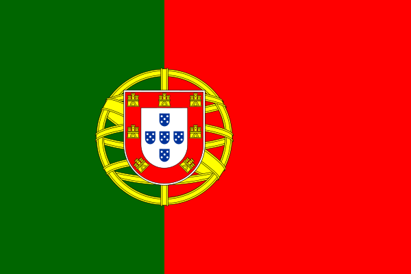

Cristiano Ronaldo Aveiro, conhecido como Cristiano Ronaldo, é um jogador de futebol português, nascido em 5 de fevereiro de 1985, em Santo Antônio, Funchal. É capitão da seleção portuguesa de futebol.
Em novembro de 2022 rescinde contrato com o Manchester United às vésperas da estreia de Portugal na Copa do Mundo do Catar. O jogador estava desde 2021 no time inglês e sua transferência para aquele clube foi estimada em 94 milhões de euros.
Assim, Cristiano Ronaldo tornou-se um dos jogadores mais caros da história do futebol. O atacante começou a carreira em um time da cidade em que nasceu, mas em 1995 foi para Clube Desportivo Nacional.


Ao longo de seis temporadas em sua primeira passagem pelo United, CR7 somou 118 gols em 292 jogos. A sua temporada mais goleadora pelo clube foi a de 2007/08, quando acumulou 42 gols que ajudaram o time vermelho de Manchester a conquistar títulos da Premier League e Champions League.

Ninguém na história do clube marcou tantos golos como o avançado português, cujo palmarés com o Real Madrid é impressionante: 4 Champions League, 3 Mundiais de Clubes, 3 Supertaças Europeias, 2 Ligas, 2 Taças do Rei e 2 Supertaças de Espanha.
Na Juventus desde 2018, CR7 venceu duas vezes o Campeonato Italiano, duas vezes a Supercopa da Itália e agora pela primeira vez a Copa da Itália. Pela Juventus, Cristiano Ronaldo soma agora 101 bolas na rede em 133 jogos, sendo o 12º maior artilheiro do clube, 3 gols atrás do francês Michel Platini.
3 X 0

3 X 0

2 X 3
